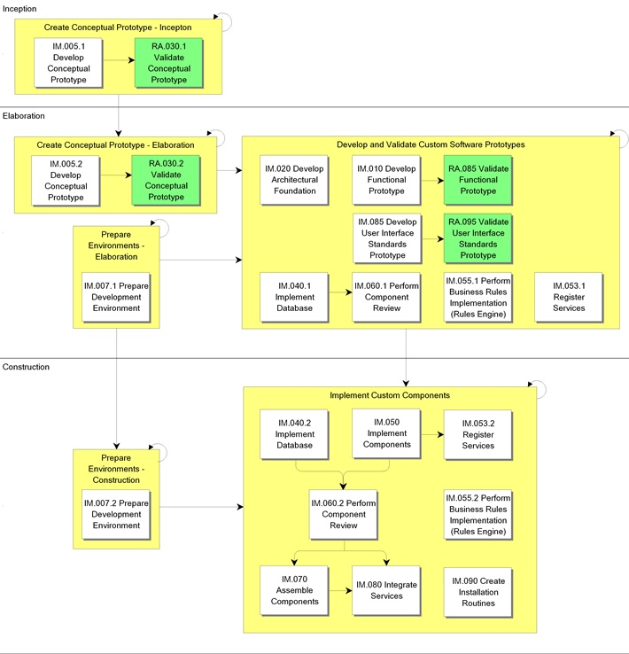

OUM |
Process Overview |
||
Method Navigation |
Current Page Navigation |
||
|
|
||||||||
Through a number of steps, mostly iterative, the final application is developed within the Implementation process. The results from the Design process are used to implement the system in terms of source code for components, scripts, executables etc. During this process, developers also implement and perform testing on software components.
Implementation is the main focus of the Construction phase, but it starts early in the Inception phase in order to implement the architecture baseline (trial architecture and prototype). During Transition, it occurs in order to handle any defects or bugs discovered while testing and releasing the system.
The main work product or output of this process is the final iteration build that is ready to be tested. In addition, the Architecture Description, initially developed in the Business Requirements process and enhanced in the Requirements Analysis , Analysis and Design processes, is also enriched with the Implementation View to create the Architectural Implementation.
 This process overview is written from the perspective of a Full Method View, utilizing ALL of the activities and tasks in this process. Therefore, all of the following sections provide comprehensive information. If your project is utilizing a tailored approach (for example, Technology Full Lifecycle View, Application Implementation View, Middleware Architecture View), not everything in this overview may be appropriate for your project. Please keep this in mind, especially when reviewing the Key Work Products and Tasks and Work Products sections. You should use OUM as a guideline for performing all types of information technology projects, but keep in mind that every project is different and that you need to adjust project activities according to each situation. Do not hesitate to add, remove, or rearrange tasks, but be sure to reflect these changes in your estimates and risk management planning. You should also consider the depth to which you address and complete each task based on the characteristics of your particular project or project increment. See Oracle's Full Lifecycle Method for Deploying Oracle-Based Business Solutions for further information on the scalability and adaptability of OUM.
This process overview is written from the perspective of a Full Method View, utilizing ALL of the activities and tasks in this process. Therefore, all of the following sections provide comprehensive information. If your project is utilizing a tailored approach (for example, Technology Full Lifecycle View, Application Implementation View, Middleware Architecture View), not everything in this overview may be appropriate for your project. Please keep this in mind, especially when reviewing the Key Work Products and Tasks and Work Products sections. You should use OUM as a guideline for performing all types of information technology projects, but keep in mind that every project is different and that you need to adjust project activities according to each situation. Do not hesitate to add, remove, or rearrange tasks, but be sure to reflect these changes in your estimates and risk management planning. You should also consider the depth to which you address and complete each task based on the characteristics of your particular project or project increment. See Oracle's Full Lifecycle Method for Deploying Oracle-Based Business Solutions for further information on the scalability and adaptability of OUM.
This process flow for this process follows:

Depending on your project (e.g., large, complex, etc.), the project manager may designate an Implementation team leader and/or team leaders for the various prototypes being built or even team leaders for development teams. If the project manager designates team leaders, they are responsible for leading their team and reviewing the work products produced by their team. The team leader plans, directs, and monitors the day-to-day work of the team. The team leader assigns work packages to the team members and makes sure they understand the requirements. The team leader is responsible for building team cohesion, motivating the teams, and providing assistance and encouragement to the team members. Each team leader performs the final quality control and quality assurance for the team by reviewing all work products. The team leader also signs off on team work completion and quality. Work that is not up to quality standards is returned. Team leaders review work products from other teams when these work products may impact aspects of the system. The team leader reports the team's progress to the project manager. Refer to Project Management in OUM for additional information on team leaders.
The process of developing the system is iterative. The Implementation process starts off with a Conceptual Prototype (IM.005). This is a mockup prototype that contains the functional requirements known at this time, and is done as early as possible in the Inception phase. How the prototype is made depends on the tools you have available, but it may be as simple as using flip charts, whiteboards or presentations. It is important to get a first cut verification on the developers' understanding of the requirements demonstrating what the screens/pages may contain when developed. There might very well be known requirements with lower priorities that have not been prototyped, because the end of the timebox is reached before the completion of these requirements. The prototype is used as a communication means between the Ambassador Users and Developers to determine any further requirements and verify the existing requirements for the development of the new application. Through the prototype, the Ambassador Users can verify the requirements and easily identify shortcomings/misunderstandings.
The process continues with two new prototypes, the Functional Prototype (IM.010), and the User Interface Standards Prototype (IM.085). The main purpose of the Functional Prototype is to communicate the functional requirements between the ambassador users and developers. In most situations, the feedback from the Conceptual Prototype leads to updates in both requirements and design, and gives a new starting point for the Functional Prototype. This prototype is delivered towards the end of each iteration in the Elaboration phase, and if possible is preferably a fully generated prototype containing the functional requirements known at the time based on the decisions made during the workshops.
The main purpose of the User Interface Standards Prototype is to agree how the new application should look in general terms, and what kind of general features should be used. The User Interface Standards Prototype is validated by the ambassador users, and other participants that are familiar with corporate standards. The result of the prototype should feed into the projects Design and Build Standards (DS.050).
The next task is another prototype, the Architectural Foundation (IM.020). This task should start as early as possible during the Elaboration phase. The Architectural Foundation has a different focus than the previous ones, namely to address architectural design decisions. What is prototyped depends on the type of system that should be built, and where the architectural challenges may be found. However, the prototype usually takes the form of ideas on how the major components should be built. It may also be used to test the integration of technical products and services to be used for the system. The purpose of the prototype is to mitigate technological risks that may be encountered. The biggest technological risks are inherent in how the components of a design fit together rather than in the components themselves. The prototype is discussed with the key customer representatives, and the outcome of this discussion provides the input for the Construction phase. The outcome can be to add new requirements, to add more detail, or may even result in changing the existing requirements or tools and technologies to be used.
When moving into the Construction phase, the system is developed through a number of predefined iterations. We start with updating the Architecture Description that was last updated in the Design process (DS.040) with the implementation view, also called the code view. The code architecture view contains files and directories. Modules and interfaces from the module view are partitioned into source files in a particular programming language. The source files are organized into directories. This document will be updated throughout the process whenever necessary. When the Architectural Implementation has been defined, you start planning the system integrations required by the current iteration as a sequence of builds. This is the planning part of the Integrate Services (IM.080) task.
During the Implement Database (IM.040) task, the physical database is produced based on the Logical Database Design that was created in the Design process (DS.150). During the Implement Components (IM.050) task, the actual components of the application are built. A component is the physical packaging of model elements, such as design classes created in the Design process. Components have a trace relationship to the model elements they implement. Some standard types of components include executables, files containing source code, library etc. This task is immediately followed by the Perform Component Review (IM.060) task where the components are unit tested, and a peer-review is performed, and where the main purpose is to discover errors in the components.
When the components are complete for a build, they are integrated into the logical assembly of components (IM.070) to which they belong. A logical assembly, can consist of components, services, interfaces, business rules and other logical assemblies of components from previous builds. An implementation logical assembly is manifested by a packaging mechanism in the Implementation environment, for example, a package in java. This task ensures that the role and requirements of a logical assembly (use cases and scenarios) are identified as part of the iteration and correctly implemented.
Finally, all the components and services are integrated into the build of the system that should be delivered as part of an iteration (IM.080). This activity focuses on creating an integration build plan describing all the (smaller) builds required in an iteration including the services (for example, middleware, system services). Each build then expands upwards to the application-specific layers and is integrated according to plan. For each build, the functionality that should be implemented and the parts of the implementation model that will be affected are described. The system integrator selects the right versions of the code (corresponding to the components and services within the iteration), compiles them and puts them together. Software should be built incrementally in manageable steps so that each step yields small integration or test problems. The executable version of the software is then subject to integration tests.
How you define your implementation iterations, and how intertwined the process will be with the other processes (RD, RA, AN and DS) depends mainly on the size of the system to be built, the complexity of the application, and the kind and number of skilled resources available (both for the customer and developer organizations). Iterations can roughly be defined as either growing, or additional. A growing approach focuses on delivering the same components through a number of iterations, with each iteration providing more detail and refinements to each component. An additional approach focuses on adding different (new) components for each iteration. Most often you will use a combination of the two approaches, but with one approach providing the main focus, or one main focus per business use case.
What main approach you choose again depends on the project situation. For example, for very complex or completely new (uncertain) business areas, it may be difficult to use the additional approach as you need some iterations to explore and investigate before you find the final solution. On the other hand, for simple business areas where the requirements are clear and unambiguous, the additional approach can be used with success. It is likely, that the more the growing approach is used, the more intertwined the Implementation process will be with the other processes as the nature of that type of iterations is to get feedback on both requirements, analysis and design, which then again should be reflected in the other processes. In that situation, all the new/changed requirements must be evaluated and given MoSCoW priorities so that it can be brought into the new development iteration. At the end of the next incremental iteration, the ambassador user again verifies whether the accepted changes have been included, and also verifies whether the requirements are complete and correct. Naturally, this does not go on indefinitely. The number of iterations must be decided up front, and there should not be too many to ensure that the reviewers keep focused to find gaps and inconsistencies as soon as possible.
Before choosing which approach to use, you should also be aware that the additional approach is nothing else than a number of mini-waterfall cycles, as you will not refine the same components, just build smaller bits before releasing them. This means that if you use this approach partly or fully, you will not have the possibility to incorporate changes to already developed components as part of the implementation process.
Within each iteration, the developers develop components according to the given MoSCoW priorities. The developer has a certain amount of time (a timebox) to deliver the next version. It is therefore vital that the priorities are properly managed as there is usually not enough time to develop all functionality. Ambassador Users tend to classify everything as a Must have, which results in an impossible job for the developers as they cannot actually prioritize their job. This may result in the undesired situation that not all of the Must Have functionality can be developed, while some less important parts have. This principle must be completely understood by the Ambassador Users, as well as the developers. The developers must be able to trust the priorities they have been provided.
Provide a fixed set of components, including the priorities for those components to each developer, so that the developer can work as independently as possible during a set timebox. However, monitor that the effort between each developer is similar in order to prevent one developer struggling to complete the Must have requirements, while another is already working on the Could have components. Also, make sure that developers do not invent functionality because they think that something would be really nice for the users.
*This process has Application Implementation supplemental process guidance.
This process has supplemental guidance that should be considered if you are doing an application implementation. Use the OUM Application Implementation Supplemental Guide to access all application implementation supplemental information. You can also go directly to the Implementation process supplemental guidance.
The tasks and work products for this process are as follows:
| ID | Task | Work Product |
|---|---|---|
Inception Phase |
||
IM.005.1 |
Develop Conceptual Prototype | Conceptual Prototype |
Elaboration Phase |
||
IM.005.2 |
Develop Conceptual Prototype | Conceptual Prototype |
IM.007.1 |
Prepare Development Environment | Development Environment |
IM.010 |
Develop Functional Prototype | Functional Prototype |
IM.020 |
Develop Architectural Foundation | Architectural Foundation |
IM.040.1 |
Implement Database | Implemented Database |
IM.053.1 |
Register Services | Populated Services Registry |
IM.055.1 |
Perform Business Rules Implementation (Rules Engine) | Implemented Business Rules (Rules Engine) |
IM.060.1 |
Perform Component Review | Component Review Results |
IM.085 |
Develop User Interface Standards Prototype | User Interface Standards Prototype |
Construction Phase |
||
IM.007.2 |
Prepare Development Environment | Development Environment |
IM.040.2 |
Implement Database | Implemented Database |
IM.050 |
Implement Components | Implemented Components |
IM.053.2 |
Register Services | Populated Services Registry |
IM.055.2 |
Perform Business Rules Implementation (Rules Engine) | Implemented Business Rules (Rules Engine) |
IM.060.2 |
Perform Component Review | Component Review Results |
IM.070 |
Assemble Components | Assembled Components |
IM.080 |
Integrate Services | Integrated Services |
IM.090 |
Create Installation Routines | Installation Routines |
The objectives of the Implementation process are:
Refer to Key Work Products for a complete list of key work products in OUM.
The following roles are required to perform the tasks within this process:
| Role ID | Name | Responsibility |
|---|---|---|
Implementing Organization |
||
| APS | Application / Product Specialist | Provide knowledge and guidance regarding the functionality and capabilities of the product(s) being implemented. |
| BA | Business Analyst | Perform services registration. If possible, you may want use a business analyst with extensive SOA architecture experience. Perform rules implementation. If possible, you may want use a business analyst with extensive business rules experience. |
| DBA | Database Administrator | Determine and set up the database schema structure, create and set up database. Preserve database integrity, tune performance, give advice, control allocation of disk space, monitor space usage, and generate DDL scripts. |
| DD | Database Designer | Create physical database design, assist in analyzing column usage, define constraints, create the authorization scheme, specify initial database configuration, and provide volume estimates. |
| DES | Designer | Design graphical interface for the Conceptual Prototype. Ensure that the Functional Prototype is in line with the generic graphical user interface design. |
| DV | Developer | Lead the team responsible for building the Conceptual Prototype. Create the Conceptual Prototype. Lead the team responsible for building the Functional Prototype. Create the Functional Prototype and ensure that the most useful use cases are prototyped within the given timeframe. Build the prototypes that make up the Architectural Foundation. Create database objects and database object logic for both the logical and physical database design. Create database object test scripts and procedures. Test the database objects and the database object logic. Review Design Model mapping with database. Preserve database integrity, tune performance, give advice, control allocation of disk space, monitor space usage, and generate DDL scripts. Lead the team of developers and implement the components. Lead the team of developers and implement the component interfaces and help define subsystem integration constraints. Lead peer-reviews of the packages. Perform code review on components. A lead application developer may be designated to review the components from the point of view of design. Create the Installation Routines. |
| QM | Quality Manager | Review components from the point of view of testing. |
| SAD | System Administrator | Prepare parts of the application environment. |
| SAN | System Analyst | Assist in the creation of the graphical interface for the prototypes by providing information about business rules and requirements and generic rules and requirements. |
| SA | System Architect | Participate in Development Environment setup. Lead the development of the prototypes that make up the Architectural Foundation. Participate in the peer-review of implemented components in order to assure adherence to the architecture. Coordinate the offshore software developers and the technical activities related to the implementation the defined architecture. Manage issues related to services integration. Plan and subsequently build the system in each iteration. You may wish to use a system architect who specializes in system integration. Lead the team responsible for building the User Interface Standards Prototype. Build the User Interface Standards Prototype. |
| SA (IA) | System Architect (Information Archtiect) |
Participate in the peer-review of the database in order to assure adherence to the Information Architecture. Preserve database integrity, tune performance, give advice, control allocation of disk space, monitor space usage, and generate DDL scripts when offshore resources are utilized. Preferably, this should be done by a system architect that specializes in Information Architecture. |
Customer (User) |
||
| KEY | Ambassador User | Assist in interpreting requirements, and provide input to the creation of the prototypes, including interpretation of relevant business rules. Validate the prototypes that make up the Architectural Foundation and provide information about existing system. Assist in finding existing graphical user interface rules and provide information for setting up a set of suggested rules. |
| CSM | Customer Staff Member | Ensure that physical resources are in place in time, and that proper software licenses are obtained. |
The critical success factors of the Analysis process also apply to the Implementation process. Additional critical success factors are:

Copyright © 2006, 2016, Oracle and/or its affiliates. All rights reserved.